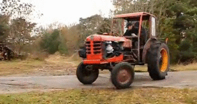
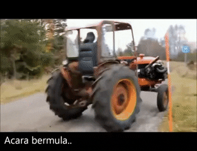
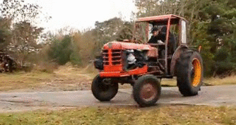
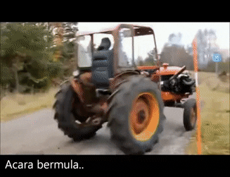
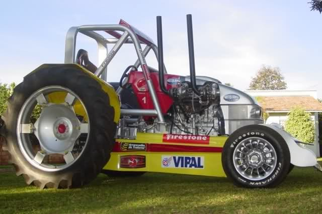
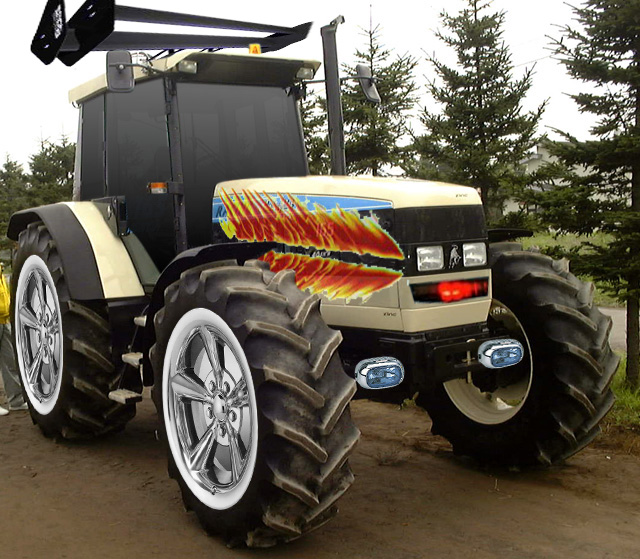

QUIERES MUCHO A TU CHIMPÍN pues para que estea contento y feliz sigue en esta página y te lo enseñamos
1. Tener un chimpín
2. El chimpín tiene que ser tu dios tienes que rezar 15 veces al día
3. Le tienes que matener al lado de la chimenea con una manta y su desayuno
4. Aliméntalo con gasolina de chimpiripinpín la mejor del mercado chimpinero
5. Si tu chimpín esta gordo sácalo a la finca para entrenar y que tenga una tableta de chocolate
6. Cuanto más antiguo sea tu chimpín mas potencia chimpinera tendra
7. Lo mejor esque todo lo que quieres para tu chimpín esta en nuestra tienda que aún no esta abierta
8. Para ir a cualquier sitio puedes usar tu chimpí ya que alcanza los 300km por tierra y 1000km por aire en modo vuelo
9. #GALICIACALIDADE
10. VIVAN LOS CHIMPÍNS
11. El chimín esta echo para aguantar miles de kilos encima del, es capaz de matar a un tarque Ruso solo con las ruedas
12. Si hay una gerra tu piedes ir con tu chimpín a acabar con todos los enemigos ya que tiene una fuerza descomunal y imparable
Humberto Benito Rodolfo José etc...
Goldon . Dumper . Stil . Ferrari
Si tu chimpín no arranca es porque tiene un dueño muy pringado que no has seguido nuestros consejos.
Las ruedas del chimpín se te gastan muy rápido es porque tu chimpin tiene una potencia chimpinera muy superior a los demas.
Tu chimpín echa mucho humo pues es porque fuma a escondidas de ti, seguramente tenga un vaper o tenga porros.
SI quieres un chimpín potente y rebueno entra ya en nuestra tienda "tuchimpin.tk"

1. Que hace un mounstro con un chimpín,sembrar el pánico
2. Erase una vez un chimpín que repiraba por el manillar un día lo usaron y se murió
3. Van dos en un chimpín y se cae el del medio
4. Vas y encuentras algo util en esta página
5. Le dice un chimpín a otro "que haces" y le dice "¡que chimporta!"
6. Vas y apruebas gallego
7. crees que apruebas gallego pero luego septiembre
El lugar de donde los chimpínes son autóctonos es en GALICIA

Con el chimpín puedes ganar una carrera
Para tener un chimpín transformer

Puedes hacer drift
 






Hasta han hecho una cancion para los chimpíns